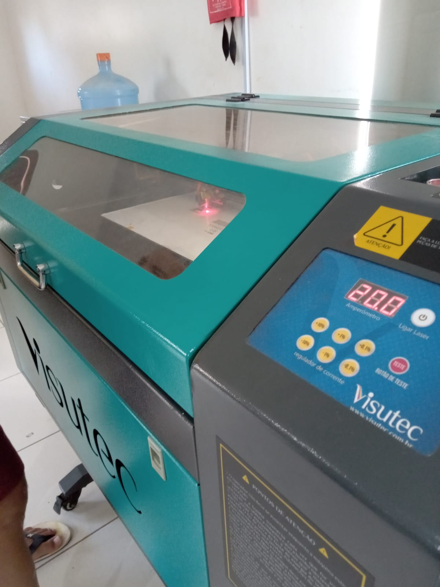
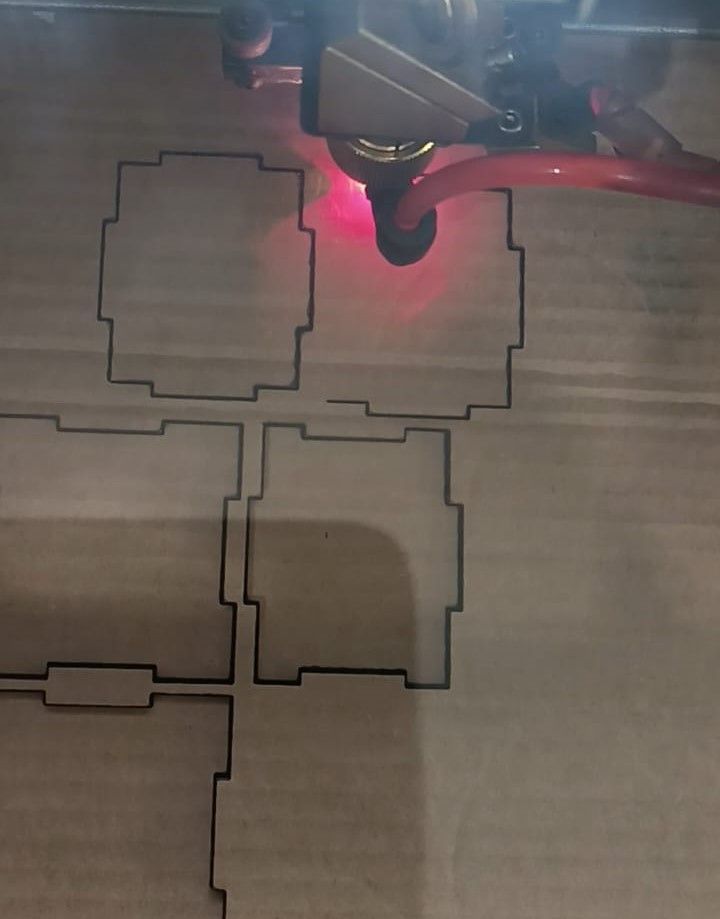
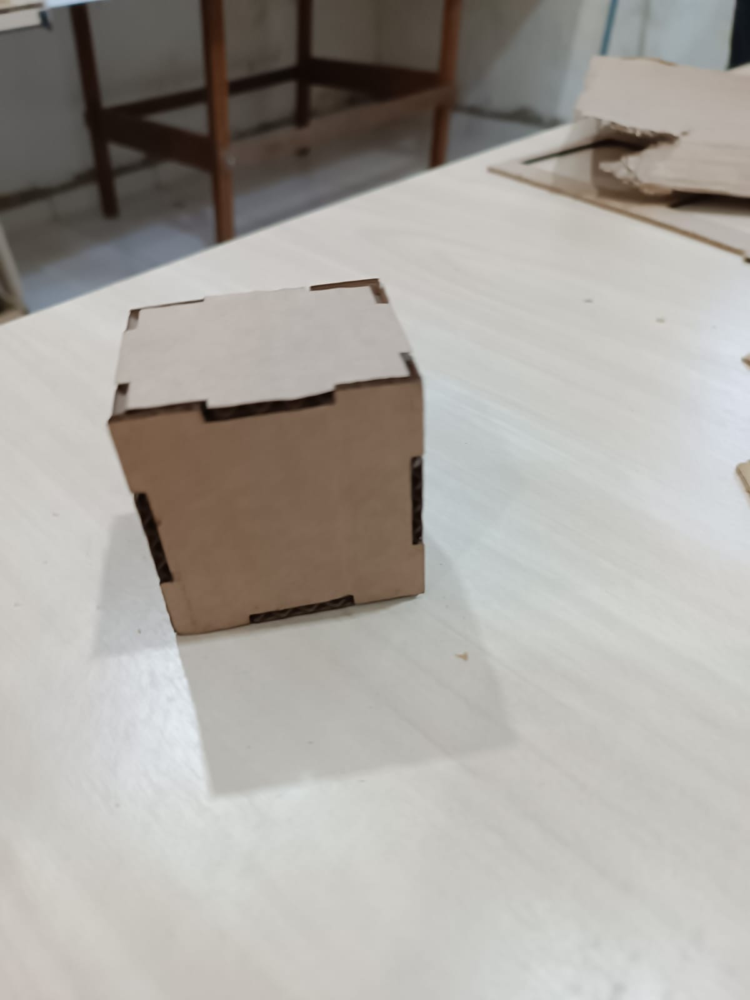

Chapter 3 Máquina a Laser

3.1 O Que é uma Máquina a Laser?
A máquina de Corte e gravação a laser é uma tecnologia que utiliza de um laser de alta potência, para cortar materiais como pano, couro, acrílico, vidro acrílico, plástico e papelão. São normalmente usadas para aplicações de fabricação industrial, mas também está começando a ser usada por escolas e pequenas empresas. A versatilidade e a precisão das máquinas a laser as tornam ferramentas indispensáveis em muitos processos de fabricação. É importante não utilizar materiais derivados de petróleo durante o processo, por conta do vapor tóxico gerado.
3.2 Como Funciona a Máquina a Laser?
3.2.1 Estrutura
Uma máquina a laser funciona utilizando um feixe de laser concentrado para cortar, gravar ou marcar materiais com alta precisão, ele é direcionado para a superfície do material a ser trabalhado. Os componentes principais de uma máquina a laser incluem a fonte de laser, os eixos de movimentação, os espelhos, a lente focalizadora e o sistema de controle.
3.2.2 Processo de Corte
A fonte de laser é o componente que gera o feixe de luz,um tubo de laser de CO2 é usado devido à sua eficiência e capacidade de gerar um feixe de laser poderoso. Os espelhos direcionam o feixe de laser através do caminho adequado, enquanto as lentes focalizam o feixe no ponto exato onde o corte ou gravação ocorrerá. Os eixos de movimentação de uma máquina a laser são fundamentais para sua operação precisa e eficiente, o eixo X e Y, são os que executam os movimentos horizontais e verticais respectivamente, quanto o eixo Z altera a altura em que o feixe vai operar no material utilizado.

O sistema de controle coordena os movimentos dos eixos, ajusta os parâmetros do laser e executa o design programado,ou seja, é responsável pela posição do feixe. O software de controle permite importar arquivos de design e ajustar os parâmetros de corte e gravação conforme necessário.
3.3 Prática: Projeto da Caixa
Para colocar em prática os estudos acima sobre a máquina, desenvolvi uma caixa dentada de encaixe, que envolve o corte de papelão utilizando o corte a laser.Retirei o modelo da caixa no site MakerCase, nessa plataforma é possivel criar projetos personalizados de caixas ajustando dimensões, espessura do material e outros parâmetros. O site gera automaticamente o arquivo SVG necessário para a máquina a laser executar. Após a escolha do modelo da caixa, fiz todos os ajustes na máquina, como: Fixação do papelão na mesa de corte, alteração da potencia do laser, distância do laser para o material e velocidade do corte, depois disso retirei o material e montei a caixa.
